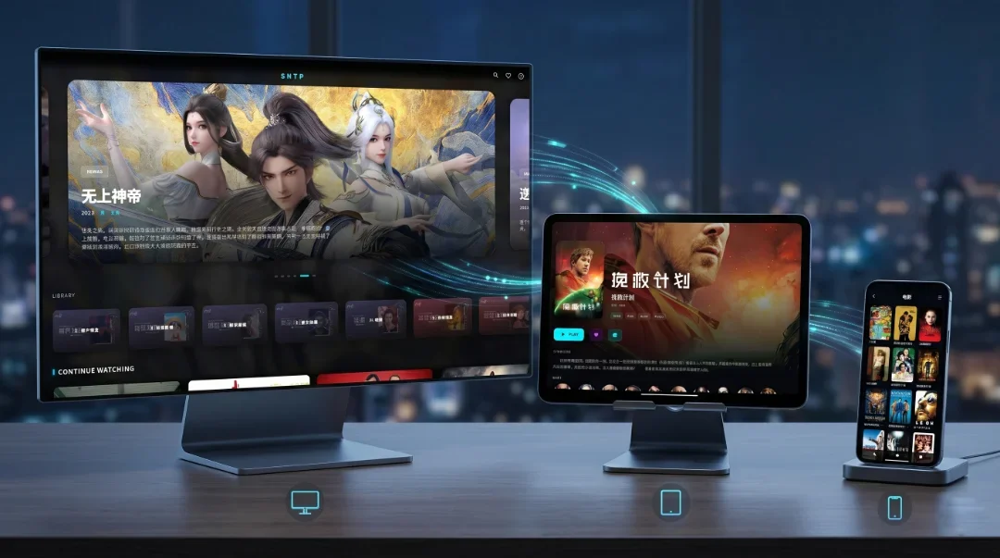

Optic Player The Cross-Platform Emby Player
An elegant, Apple TV inspired cross-platform Emby player and client.

Available Everywhere
One Emby player for all your devices — seamless playback across Apple TV, Android TV, Windows, macOS, iOS, and Linux.
Windows
Windows 10/11
x64
Android
Android 7.0+
Universal
Android TV
Android 7.0+
Universal
macOS
macOS 10.15+
Universal
iOS
iOS 13.0+
ARM64
Apple TV
tvOS 13.0+
ARM64
Linux
Common
x64
Powerful Playback Engines
Dual-engine architecture providing both MPV and highly optimized Native players for maximum decoding performance.
Android / TV
iOS / iPadOS / macOS
Windows / Linux
Optic Player integrates MPV across all platforms for ultimate format compatibility. On Apple and Android devices, we also provide optimized Native Players as the default option, offering superior hardware decoding performance and battery efficiency.
What's New
Discover the latest features and improvements.
Changes
- Add network speed display during buffering on Android
- Improve player compatibility
- Optimize UI performance
- Add back shortcut key on PC: ESC
- Upgrade related dependencies to the latest version
Your Privacy Matters
Optic Player respects your privacy. Our software does not collect, track, or share any of your personal information or viewing habits. Everything stays between your client and your Emby server.
GitHub Issues
Report bugs and submit feature requests.